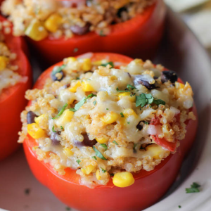

1. Preheat oven to 350 degrees F. Line a 9×13 baking dish with parchment paper.
2.In a large bowl, combine quinoa, green chiles, corn, beans, tomatoes, cheeses, cilantro, cumin, garlic, onion and chili powder, salt and pepper, to taste.
Spoon the filling into each bell pepper cavity.
3. Place on prepared baking dish, cavity side up, and bake until the peppers are tender and the filling is heated through, about 25-30 minutes.
4.Serve immediately.